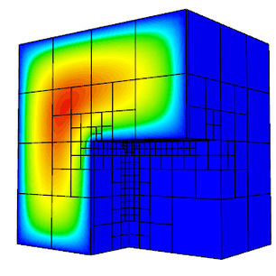

Features
The goal of MFEM is to enable research and development of scalable finite element discretization and solver algorithms through general finite element abstractions, accurate and flexible visualization, and tight integration with the hypre library.
Conceptually, MFEM can be viewed as a finite element toolbox that provides the building blocks for developing finite element algorithms in a manner similar to that of MATLAB for linear algebra methods.
Higher-order Finite Element Spaces

MFEM supports a wide variety of finite element spaces in 2D and 3D, including arbitrary high-order:
{kind=link}
{kind=link}
- H1-conforming, H(div)-conforming, H(curl)-conforming spaces,
- discontinuous L2 spaces,
- numerical trace (interfacial) spaces,
- NURBS spaces for isogeometric analysis.
Many bilinear and linear forms defined on these spaces, as well as linear operators such as gradient, curl and embedding between these spaces, are available in the code.
{kind=link}
{kind=link}
Flexible Discretization
In addition to classical Galerkin methods, MFEM enables the quick prototyping of
- mixed finite elements,
- Discontinuous Galerkin (DG) methods,
- isogeometric analysis methods,
- Discontinuous Petrov-Galerkin (DPG) approaches,
- Hybridization and static condensation for high-order problems.

Wide Range of Mesh Types
MFEM supports arbitrary element transformations and includes classes for dealing with:
- triangular, quadrilateral, tetrahedral, wedge, and hexahedral elements,
- uniform refinement (all element types),
- conforming local mesh refinement (triangular/tetrahedral meshes),
- non-conforming mesh refinement (quadrilateral/hexahedral meshes), including anisotropic refinement,
- mesh optimization based on the Target-Matrix Optimization Paradigm (TMOP),
- higher-order elements with curved boundaries,
- surface meshes embedded in 3D, topologically periodic meshes, 1D meshes.
{kind=link}
{kind=link}
Additional support for automated adaptive analysis and parallel unstructured modifications on simplex meshes is provided via integration with the PUMI distributed mesh management system.
Parallel, Scalable and GPU-ready
MFEM supports MPI-based parallelism throughout the library, and can readily be used as a scalable unstructured finite element problem generator.
- MFEM-based applications have been scaled to hundreds of thousands of parallel cores.
- The library supports efficient operator assembly/evaluation for tensor-product high-order elements.
- Support for hardware devices, such as GPUs, and programming models, such as CUDA, OCCA, RAJA and OpenMP is also included.
{kind=link}
A serial MFEM application typically requires minimal changes to transition to a scalable parallel version of the code, where it can take advantage of the integrated scalable linear solvers from the hypre library. Both of these versions can be further transitioned to high-performing templated variants, where operator assembly/evaluation is fully inlined for particular runtime parameters. As of version 4.0, GPU acceleration of several examples and many linear algebra and finite element operations is available.
Built-in Solvers
MFEM is commonly used as a "finite element to linear algebra translator", since it can take a problem described in terms of finite element-type objects, and produce the corresponding linear algebra vectors and sparse matrices.
{kind=link}
{kind=link}
Several matrix storage formats are available including dense, compressed sparse row (CSR) and parallel compressed sparse row (ParCSR). Block vectors, operators and matrices are also supported.
A variety of solvers are available for the resulting linear algebra systems (or semi-discrete time-integration problems):
- point-wise and polynomial serial and parallel smoothers,
- Krylov solvers, such as PCG, MINRES and GMRES applicable to general operators in serial and in parallel,
- parallel eigensolvers: LOBPCG and AME,
- high-performance preconditioners from the hypre library including the BoomerAMG, AMS and ADS solvers,
- many linear and nonlinear solvers, preconditioners and time integrators from the PETSc suite,
- various iterative solvers and preconditioners on multiple architectures (OpenMP, CUDA and HIP) from the Ginkgo library.
- time integrators and non-linear solvers from the CVODE, ARKODE and KINSOL libraries of the SUNDIALS suite,
- discretization-specific solvers for electromagnetic, elasticity, hybridization and DPG methods,
- parallel and sequential sparse direct solvers based on SuperLU, STRUMPACK and the SuiteSparse library,
- explicit and implicit high-order Runge-Kutta time integrators,
- solvers for nonlinear problems (Newton, HiOp) and for single linearly constrained quadratic minimization problems.
Extensive Examples
MFEM includes a number of well-documented example codes that can be used as tutorials, as well as simple starting points for user applications. Some of the included example codes are:
- Example 1: nodal H1 FEM for the Laplace problem,
- Example 2: vector FEM for linear elasticity,
- Example 3: Nedelec H(curl) FEM for the definite Maxwell problem,
- Example 4: Raviart-Thomas H(div) FEM for the grad-div problem,
- Example 5: mixed pressure-velocity FEM for the Darcy problem,
- Example 6: non-conforming adaptive mesh refinement (AMR) for the Laplace problem,
- Example 7: Laplace problem on a surface (the unit sphere),
- Example 8: Discontinuous Petrov-Galerkin (DPG) for the Laplace problem,
- Example 9: Discontinuous Galerkin (DG) time-dependent advection,
- Example 10: time-dependent implicit nonlinear elasticity,
- Example 11: parallel Laplace eigensolver,
- Example 12: parallel linear elasticity eigensolver,
- Example 13: parallel Maxwell eigensolver,
- Example 14: Discontinuous Galerkin (DG) for the Laplace problem,
- Example 15: dynamic AMR for Laplace with prescribed time-dependent source,
- Example 16: time-dependent nonlinear heat equation,
- Example 17: Discontinuous Galerkin (DG) for linear elasticity,
- Example 18: Discontinuous Galerkin (DG) for the Euler equations,
- Example 19: incompressible nonlinear elasticity,
- Example 20: symplectic ODE integration,
- Example 21: adaptive mesh refinement for linear elasticity,
- Example 22: complex-valued linear systems,
- Example 23: second order in time wave equation,
- Example 24: mixed finite element spaces and interpolators,
- Example 25: Perfectly Matched Layer (PML) for Maxwell equations,
- Example 26: multigrid preconditioner for the Laplace problem.
Most of the examples have a serial and a parallel version, illustrating the ease of transition and the minimal code changes between the two.
Many of the examples also have modifications that take advantage of optional third-party libraries such as PETSc, SUNDIALS, PUMI, Ginkgo and HiOp.
Beyond the examples, a number of miniapps are available that are more representative of the advanced usage of the library in physics/application codes. Some of the included miniapps are:
- Volta: simple electrostatics simulation code,
- Tesla: simple magnetostatics simulation code,
- Maxwell: transient electromagnetics simulation code,
- Joule: transient magnetics and Joule heating miniapp,
- Mesh Explorer: visualize and manipulate meshes,
- Mesh Optimizer: optimize high-order meshes,
- Minimal Surface: compute the minimal surface of a given mesh,
- Display Basis: visualize finite element basis functions,
- Get Values: extract field values via DataCollection classes,
- Load DC: visualize fields saved via DataCollection classes,
- Convert DC: convert between different DataCollection formats,
- LOR Transfer: map functions between high-order and low-order-refined spaces.
In addition, the sources for several external benchmark/proxy-apps build on top of MFEM are available:
- Laghos: high-order Lagrangian hydrodynamics miniapp,
- Mulard: multigroup thermal radiation diffusion mini application.
A handful of "toy" miniapps of less serious nature demonstrate the flexibility of MFEM (and provide a bit of fun):
- Automata: model of a simple cellular automata,
- Life: model of Conway's game of life,
- Lissajous: spinning optical illusion,
- Mandel: fractal visualization with AMR,
- Mondrian: convert any image to an AMR mesh,
- Rubik: interactive Rubik's Cube™ puzzle,
- Snake: model of the Rubik's Snake™ puzzle.
Accurate and Flexible Visualization
The general (high-order) meshes and finite element functions in MFEM can be visualized accurately using the companion OpenGL visualization tool GLVis, which is built on top of MFEM.
The VisIt visualization and analysis tool also natively supports MFEM formats.
Another visualization tool natively supported by MFEM is ParaView. The file format supports high-order (up to order six) meshes and elements.
Lightweight, Portable and Easily Extendable
The MFEM code base is relatively small and is written in highly portable C++ (e.g. with very limited use of templates and the STL).
- The serial version of MFEM has no external dependencies and is straightforward to build on Linux, Mac and Windows machines.
- The MPI-parallel version uses two third-party libraries (hypre and METIS), and is also easy to build with an MPI compiler.
- On most machines, both versions can be built in under a minute by typing: "
make serial -j" and "make parallel -j" respectively.
The object-oriented design of MFEM separates the mesh, finite element and linear algebra abstractions, making it easy to extend the library and adapt it to a variety of applications.
Open Source
MFEM is an open-source software, and can be freely used under the terms of the BSD license.